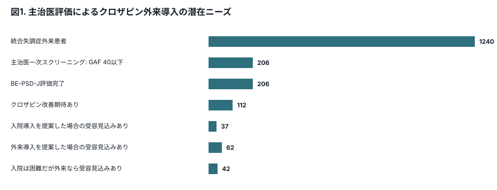
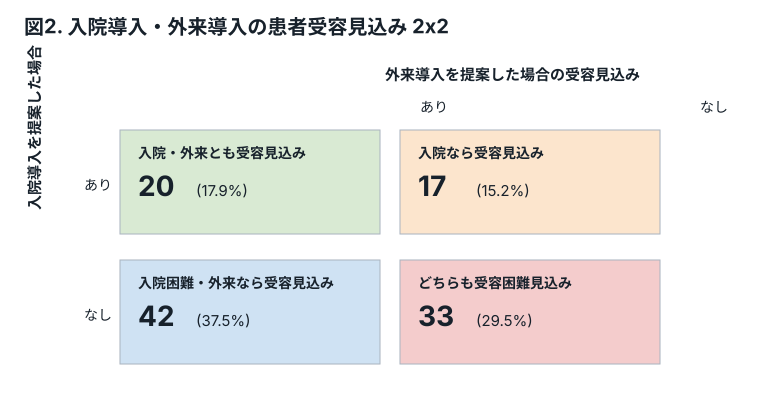
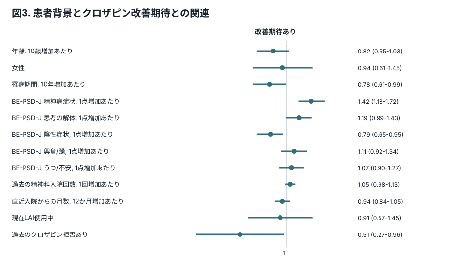
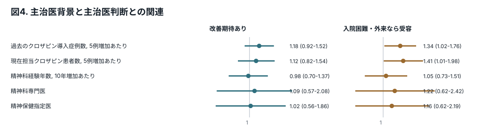
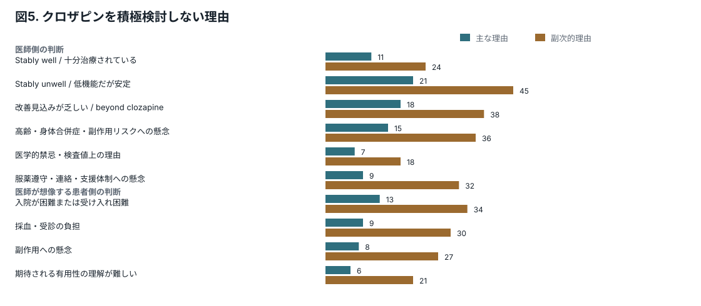
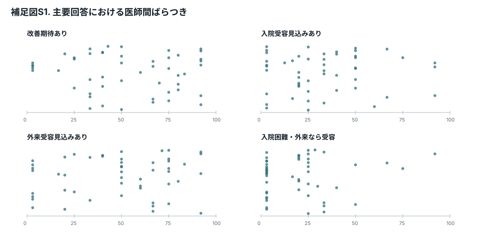

研究目的
基幹病院外来に、クロザピン検討候補となりうる統合失調症患者がどの程度いるかを患者単位で可視化する。
主治医が、各患者についてクロザピンにより改善が期待できると考えるかを明らかにする。
入院導入と外来導入を提案した場合の患者受容見込みを2x2で示し、外来導入で初めて治療アクセスが開ける層を推定する。
クロザピンを積極検討しない理由を、医師側の判断と医師が想像する患者側の判断に分け、介入可能な障壁を整理する。
Methods 概要
対象施設と対象患者
岡山県精神科医療センターと山梨県立北病院の精神科外来に通院する統合失調症患者を母集団とする。クロザピン使用中または使用歴がある患者は、本調査の未導入ニーズ評価から除外する。
患者一覧作成と一次スクリーニング
患者一覧は電子カルテから研究事務局が抽出する。一次スクリーニングは紙の患者一覧を用いて各主治医に依頼し、主治医がGAF 40以下相当と判断する患者をチェックする。
Web回答用患者一覧
一次スクリーニング後、該当患者一覧を個人情報を含まない形に変換してサーバーに格納する。以降のBE-PSD-J評価、クロザピン改善期待、入院導入・外来導入の患者受容見込み、非検討理由はWebフォーム上で回答してもらう。
抽出患者の評価
一次抽出患者について、BE-PSD-Jの5ドメイン（精神病症状、思考の解体、陰性症状、興奮/躁、うつ/不安）を0-6で評価する。加えて、年齢、性別、罹病期間、入院歴、LAI使用、過去のクロザピン拒否など、カルテまたは主治医が容易に把握できる背景情報を収集する。
主治医判断アウトカム
各抽出患者について、主治医が「クロザピンにより改善が期待できるか」、および「入院導入を提案した場合に患者が受け入れそうか」「外来導入を提案した場合に患者が受け入れそうか」を分けて回答する。医師自身の推奨意向と、医師が想像する患者受容性は別概念として扱う。
探索的ランダム教示
医師ごとに、患者受容性情報、自殺予防エビデンス、外来導入時の初期受診頻度シナリオ、他国で外来クロザピン導入・維持を受けている患者の平均的背景情報をランダムに提示し、主治医判断への影響を探索的に評価する。これは主解析ではなく、将来の大規模調査に向けた予備的検討と位置づける。
関連文献: 先行研究レポート、Jakobsen 2023 cliniciansノート、Jakobsen 2025患者視点ノート。
Results 図表モック
表1. 回答した精神科医の背景
| 項目 | 全体 n = 50 | 岡山 n = 31 | 山梨 n = 19 |
|---|---|---|---|
| 精神科経験年数, 中央値 (IQR) | 12 (8-16) | 11 (8-15) | 12 (10-16) |
| 精神科専門医, n (%) | 37 (74.0) | 22 (71.0) | 15 (78.9) |
| 精神保健指定医, n (%) | 37 (74.0) | 23 (74.2) | 14 (73.7) |
| 過去のクロザピン導入症例数, 中央値 (IQR) | 1 (0-4) | 1 (0-4) | 2 (1-4) |
| 現在担当しているクロザピン処方患者数, 中央値 (IQR) | 1 (0-2) | 1 (0-2) | 1 (0-2) |
値はダミーデータ。精神科経験年数、専門医、指定医、過去のクロザピン導入症例数、現在担当しているクロザピン処方患者数は全て事前に施設データから取得し、医師本人には回答を求めない。
表2. クロザピン検討候補患者の背景: 改善期待あり/なし別
| 項目 | 全体 n = 206 | 改善期待あり n = 112 | 改善期待なし n = 94 |
|---|---|---|---|
| 年齢, 歳, 中央値 (IQR) | 48 (39-56) | 47 (38-55) | 51 (42-57) |
| 女性, n (%) | 87 (42.2) | 47 (42.0) | 40 (42.6) |
| 罹病期間, 年, 中央値 (IQR) | 23 (14-32) | 20 (12-30) | 25 (15-33) |
| BE-PSD-J 精神病症状, 中央値 (IQR) | 4 (3-5) | 4 (3-5) | 4 (3-4) |
| BE-PSD-J 思考の解体, 中央値 (IQR) | 3 (2-4) | 3 (2-4) | 3 (2-3) |
| BE-PSD-J 陰性症状, 中央値 (IQR) | 4 (3-5) | 4 (3-5) | 4 (4-5) |
| BE-PSD-J 興奮/躁, 中央値 (IQR) | 1 (0-2) | 1 (0-2) | 1 (0-2) |
| BE-PSD-J うつ/不安, 中央値 (IQR) | 2 (1-3) | 2 (1-3) | 2 (1-3) |
| 過去の精神科入院回数, 中央値 (IQR) | 3 (2-4) | 3 (2-4) | 3 (1-4) |
| 直近入院からの月数, 中央値 (IQR) | 21 (11-33) | 20 (10-32) | 23 (12-35) |
| 現在LAI使用中, n (%) | 73 (35.4) | 42 (37.5) | 31 (33.0) |
| 過去のクロザピン拒否あり, n (%) | 26 (12.6) | 10 (8.9) | 16 (17.0) |
配置理由: 低機能・症状残存患者のうち、主治医がクロザピンで改善が期待できると考える層とそうでない層を分ける。stably unwell / beyond clozapineの議論に接続する。
表3. 改善期待あり患者の背景: 入院/外来受容見込み2x2別
| 項目 | 入院あり 外来あり n = 20 | 入院あり 外来なし n = 17 | 入院なし 外来あり n = 42 | 入院なし 外来なし n = 33 |
|---|---|---|---|---|
| 年齢, 歳, 中央値 (IQR) | 50 (38-54) | 47 (40-51) | 46 (37-52) | 46 (39-57) |
| 女性, n (%) | 6 (30.0) | 8 (47.1) | 18 (42.9) | 15 (45.5) |
| 罹病期間, 年, 中央値 (IQR) | 27 (12-30) | 21 (14-29) | 20 (14-29) | 19 (8-31) |
| BE-PSD-J 精神病症状, 中央値 (IQR) | 4 (4-5) | 5 (4-5) | 4 (3-5) | 4 (4-5) |
| BE-PSD-J 思考の解体, 中央値 (IQR) | 3 (3-4) | 3 (2-4) | 3 (2-4) | 3 (2-4) |
| BE-PSD-J 陰性症状, 中央値 (IQR) | 4 (3-5) | 4 (3-5) | 4 (4-5) | 4 (4-5) |
| BE-PSD-J 興奮/躁, 中央値 (IQR) | 1 (0-2) | 2 (1-3) | 1 (0-2) | 1 (0-2) |
| BE-PSD-J うつ/不安, 中央値 (IQR) | 2 (2-3) | 1 (1-2) | 2 (1-3) | 2 (1-3) |
| 過去の精神科入院回数, 中央値 (IQR) | 3 (2-4) | 3 (2-3) | 2 (2-3) | 3 (2-4) |
| 直近入院からの月数, 中央値 (IQR) | 25 (8-36) | 23 (14-37) | 24 (12-30) | 15 (7-25) |
| 現在LAI使用中, n (%) | 5 (25.0) | 6 (35.3) | 19 (45.2) | 12 (36.4) |
| 過去のクロザピン拒否あり, n (%) | 2 (10.0) | 2 (11.8) | 3 (7.1) | 3 (9.1) |
配置理由: 「入院では受け入れにくそうだが、外来なら受け入れそう」な患者像を示す。外来導入の政策的・実装的ニーズを説明する中核表。
図1. 主治医評価による潜在ニーズ

図2. 入院導入・外来導入の患者受容見込み2x2

図3. 患者背景とクロザピン改善期待との関連

図4. 主治医背景と主治医判断との関連

図5. クロザピンを積極検討しない理由

表4. クロザピンを積極検討しない理由の詳細
| 理由カテゴリ | 主な理由 | 副次的理由 |
|---|---|---|
| 医師側の判断 | ||
| Stably well / 十分治療されている | 11 | 24 |
| Stably unwell / 低機能だが安定 | 21 | 45 |
| 改善見込みが乏しい / beyond clozapine | 18 | 38 |
| 高齢・身体合併症・副作用リスクへの懸念 | 15 | 36 |
| 医学的禁忌・検査値上の理由 | 7 | 18 |
| 服薬遵守・連絡・支援体制への懸念 | 9 | 32 |
| 医師が想像する患者側の判断 | ||
| 入院が困難または受け入れ困難 | 13 | 34 |
| 採血・受診の負担 | 9 | 30 |
| 副作用への懸念 | 8 | 27 |
| 期待される有用性の理解が難しい | 6 | 21 |
主な理由は1つ、副次的理由は複数選択可。患者拒否/拒否見込みそのものは親カテゴリとし、理由は下位項目で集計する。
表5. 質問紙内factorial RCTの効果推定
| 介入とアウトカム | 介入群 n / N (%) | 対照群 n / N (%) | 群間差 ポイント (95% CI) |
|---|---|---|---|
| Patient-willingness evidence: Shown / Not shown | |||
| クロザピン改善期待あり | 61 / 104 (58.7) | 50 / 102 (49.0) | +9.7 (-4.1 to +23.4) |
| 外来受容見込みあり | 55 / 104 (52.9) | 42 / 102 (41.2) | +11.7 (-2.0 to +25.4) |
| Suicide-prevention evidence: Shown / Not shown | |||
| クロザピン改善期待あり | 64 / 103 (62.1) | 47 / 103 (45.6) | +16.5 (+2.8 to +30.2) |
| 外来受容見込みあり | 52 / 103 (50.5) | 45 / 103 (43.7) | +6.8 (-7.2 to +20.7) |
| Outpatient visit frequency during first 6 weeks: once-weekly / twice-weekly | |||
| 外来受容見込みあり | 56 / 103 (54.4) | 41 / 103 (39.8) | +14.6 (+0.7 to +28.5) |
| 入院困難・外来なら受容見込み | 38 / 103 (36.9) | 26 / 103 (25.2) | +11.7 (-0.6 to +24.0) |
| Typical outpatient clozapine patient profile abroad: Shown / Not shown | |||
| クロザピン改善期待あり | 63 / 104 (60.6) | 48 / 102 (47.1) | +13.5 (-0.2 to +27.2) |
| 外来受容見込みあり | 58 / 104 (55.8) | 39 / 102 (38.2) | +17.5 (+3.8 to +31.2) |
群間差はパーセンテージポイント。4つの教示は医師ごとに固定してランダム化し、患者ごとには変えない。
補足図S1. 主要回答における医師間ばらつき
